Nick Ho
Captures desktop
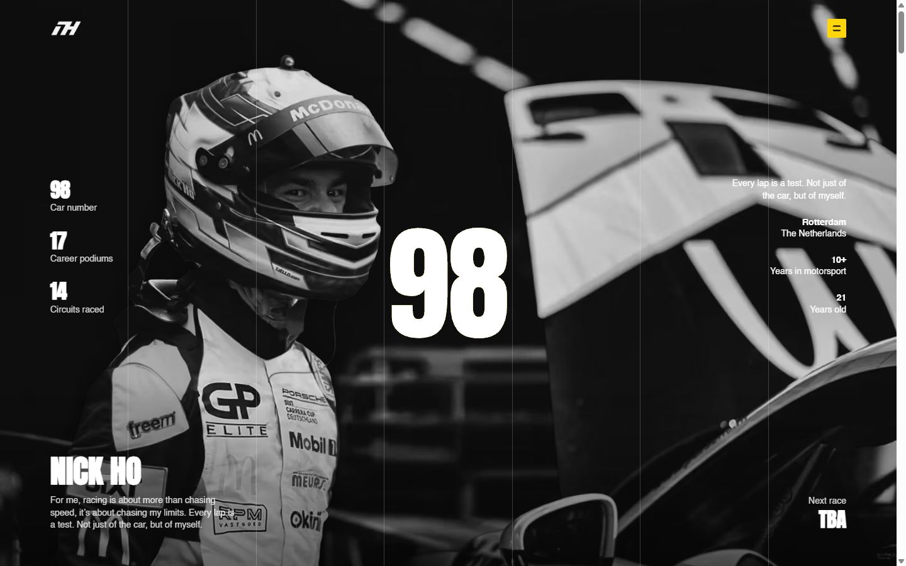

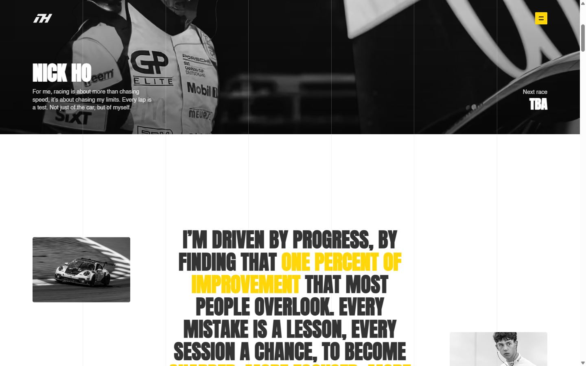
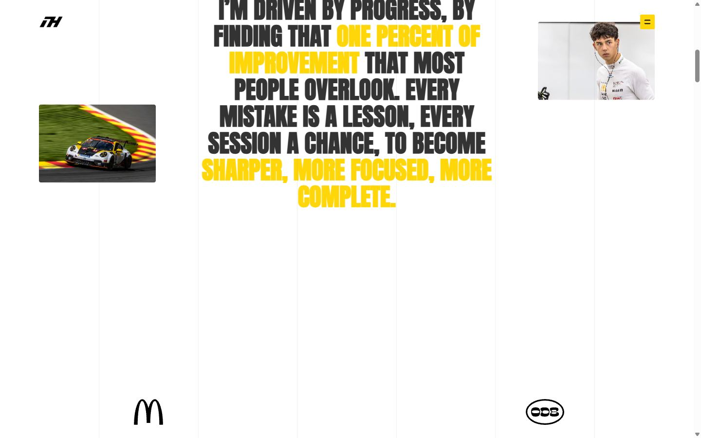
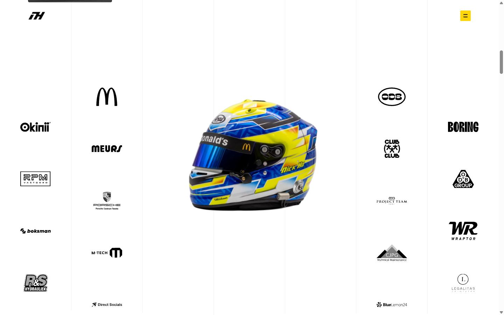
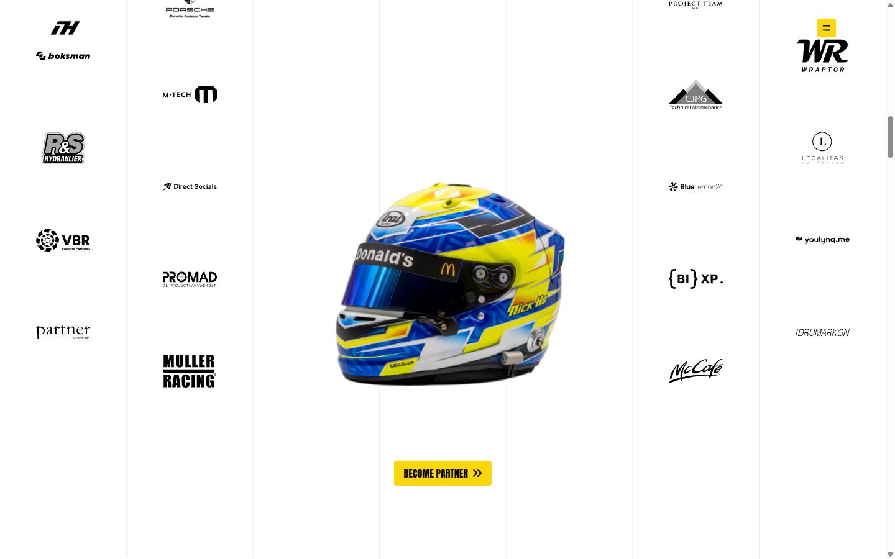
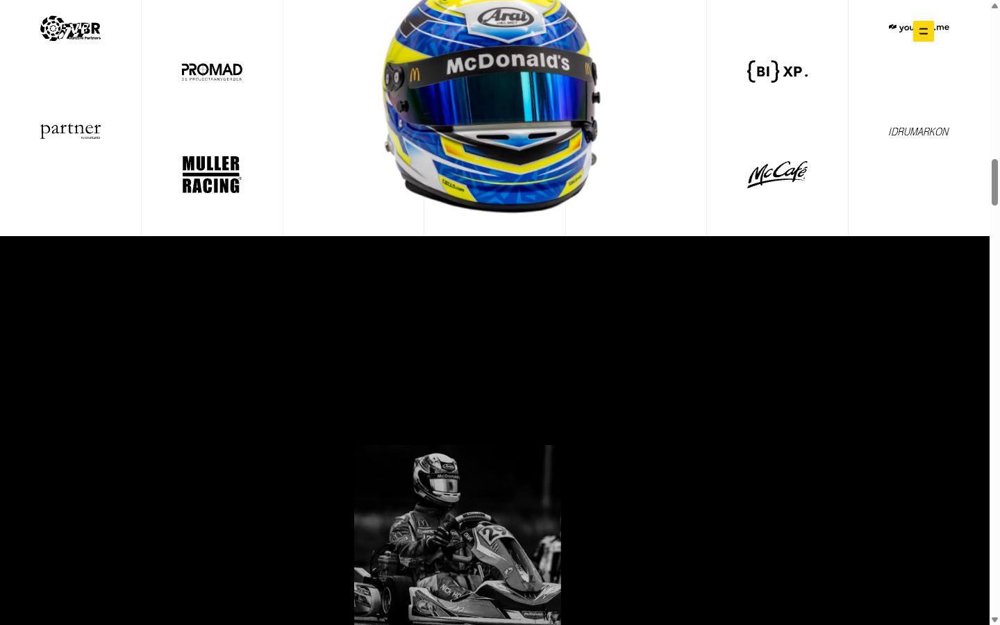
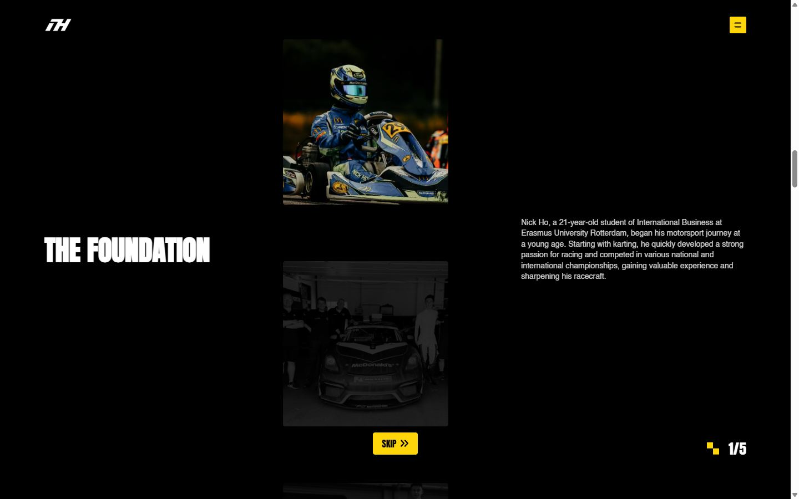
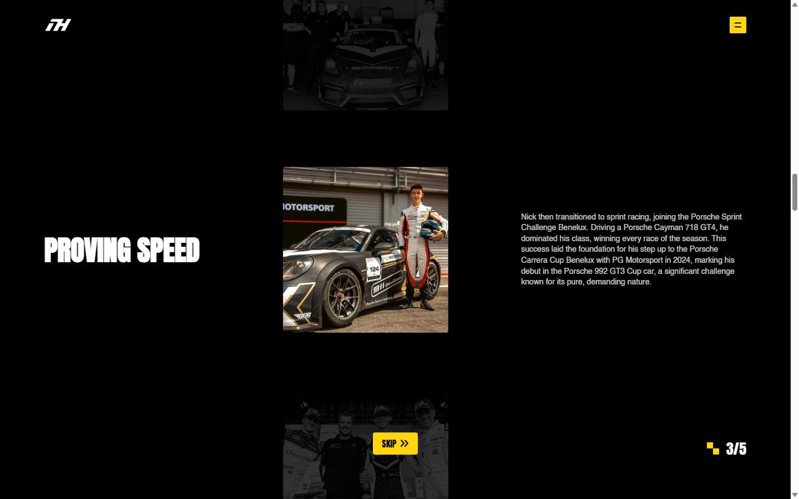
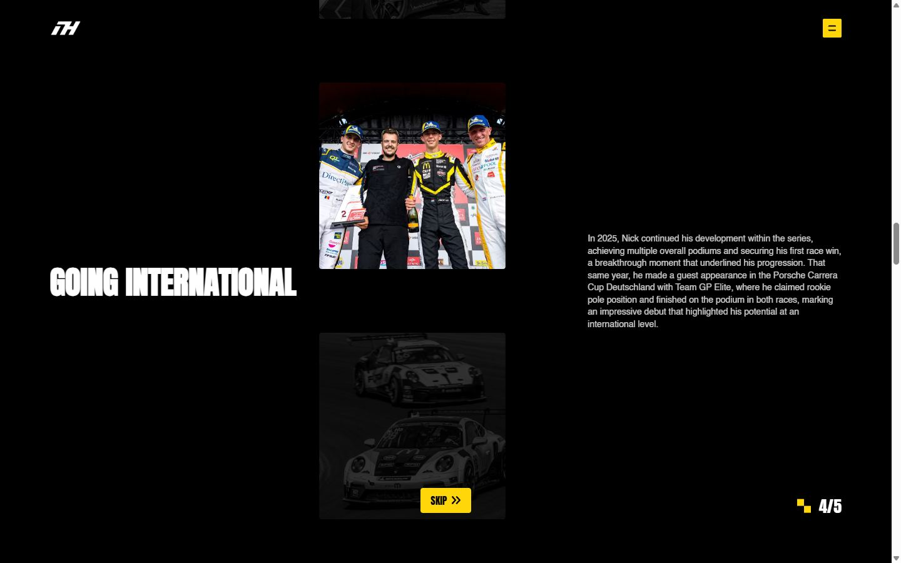
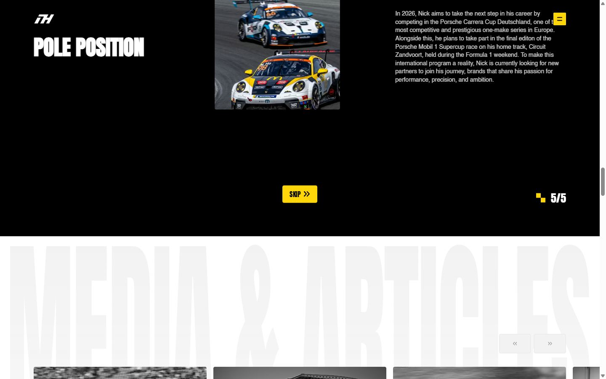
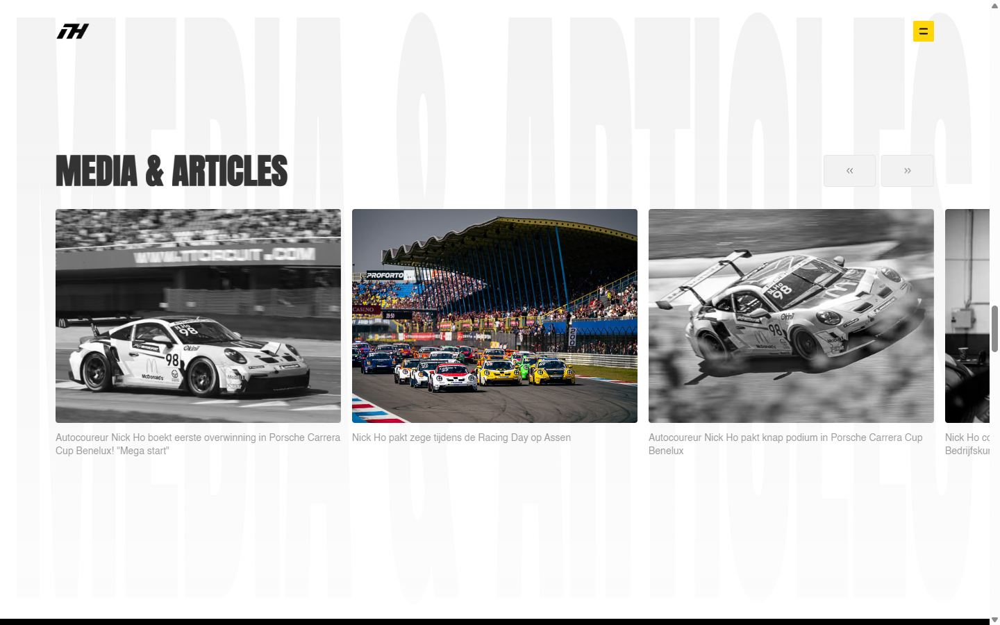
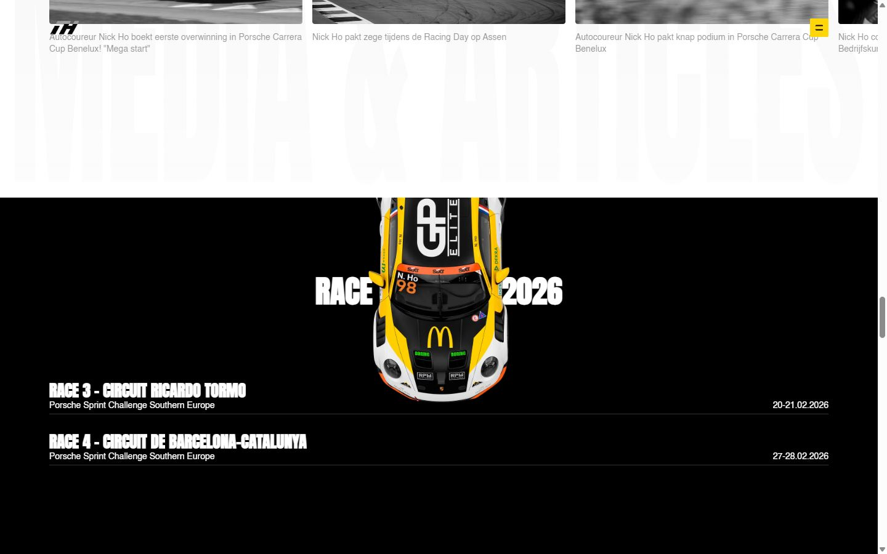
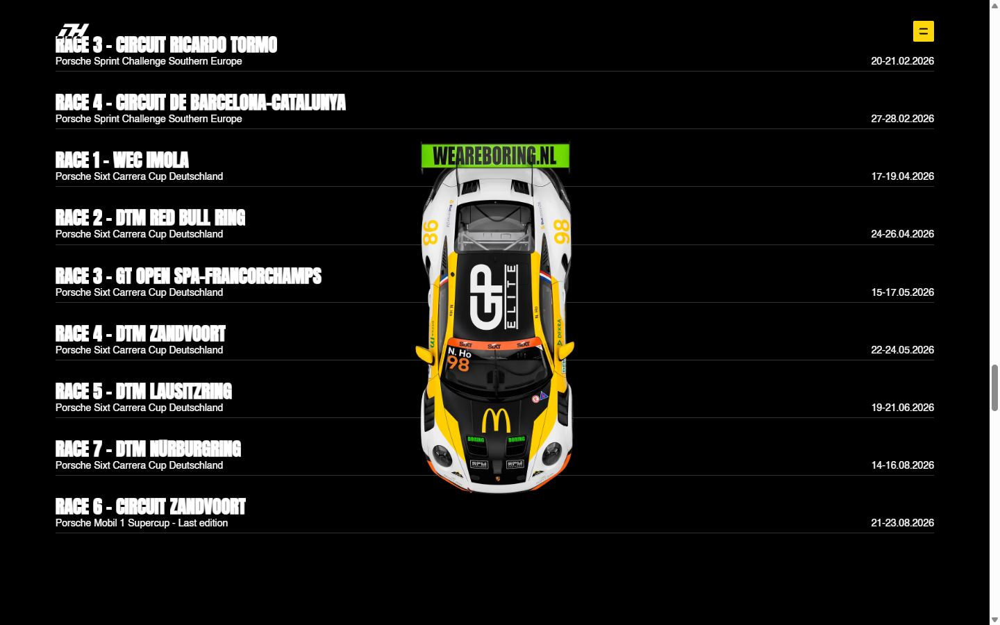
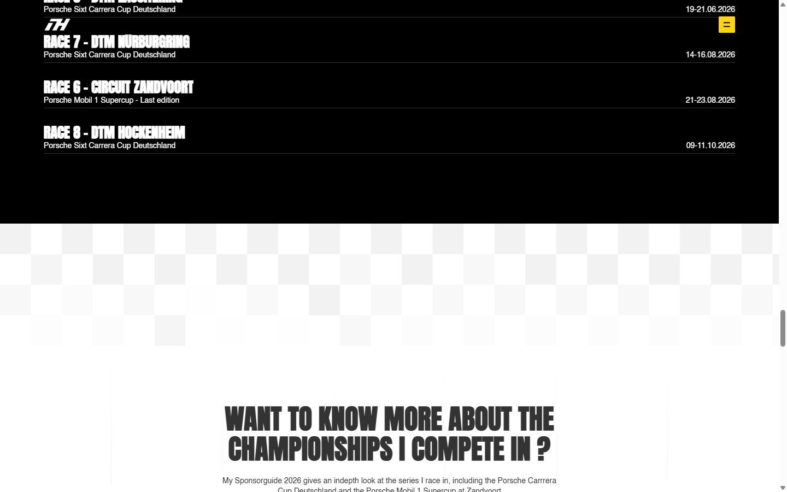
Pages internes
Mobile
Stack détectée
GSAP, Lenis, ScrollTrigger, SplitText/SplitType, Swiper, Three.js, Virtual scroll, WebGL, Webflow, jQuery
Versions : GSAP 3.11.0 · Three.js r?
Shaders GLSL personnalisés extraits : 16 (voir shaders.glsl)
Design tokens
Couleurs (fonds, pondérées par surface)
#ffffff · #000000 · #fed60a · #f2f2f2
Couleurs de texte
#ffffff · #333333 · #000000 · #fed60a
Polices utilisées (par volume de texte)
Helvetica · Anton
Fichiers de police chargés
Typographie
| Élément | Police | Taille | Graisse | Interligne | Interlettrage | Casse |
|---|---|---|---|---|---|---|
| h1 | Anton, Arial, sans-serif | 50px | 600 | 55px | normal | uppercase |
| h2 | Anton, Arial, sans-serif | 50px | 600 | 50px | normal | uppercase |
| h3 | Anton, Arial, sans-serif | 26px | 700 | 26px | normal | uppercase |
| p | Helvetica, Arial, sans-serif | 14px | 400 | 19.6px | normal | none |
| a | Helvetica, Arial, sans-serif | 93.6px | 400 | 102.96px | -3.744px | none |
| li | Helvetica, Arial, sans-serif | 16px | 400 | 22.4px | normal | none |
| body | Helvetica, Arial, sans-serif | 16px | 400 | 22.4px | normal | none |
Échelle des tailles de texte
14px (424) · 16px (158) · 26px (58) · 50px (35) · 32px (7) · 64px (5) · 200px (2)
Arrondis
4px · 160px · 2px · 10px · 8px
Transitions CSS fréquentes
Points de rupture (media queries)
479px · 991px · 767px · 768px · 2400px · 2000px · 1440px · 992px · 480px
Animations CSS (@keyframes)
spin
Variables CSS (:root)
--_typography---fonts--primary-font: Helvetica, Arial, sans-serif; --_colors---black--80: #333; --_typography---line-height--body: 1.4; --_typography---heading-size--xlarge: 10rem; --_typography---line-height--heading: 1; --_typography---heading-size--large: 2.5rem; --_typography---heading-size--medium: 2rem; --_typography---heading-size--small: 2rem; --_typography---heading-size--xsmall: 1.25rem; --_typography---body-size--regular: 1rem; --_typography---body-size--small: 1rem; --_typography---body-size--large: 1.25rem; --_typography---fonts--heading-font: Anton, Arial, sans-serif; --_colors---black--100: black; --_colors---white--100: white; --_typography---rich-text--h1: 6rem; --_typography---rich-text--h2: 4rem; --_typography---rich-text--h3: 2.5rem; --_typography---rich-text--h4: 1.75rem; --_colors---black--50: #00000080; --_typography---body-size--medium: 1.15rem; --padding-global--regular: 2rem; --padding-section--small: 4rem; --padding-section--regular: 6rem; --gap-spacing--regular: 1.5rem; --_spacing---padding-section--medium<deleted|variable-e4fc0c3b-8757-704c-061b-a68b9dea2dc5>: 5em; --padding-section--large: 8rem; --_colors---white--20: #fff3; --_colors---black--5: #0000000d; --border-radius--regular: .25rem; --padding-section--xlarge: 10rem; --border-radius--small: .125rem; --_colors---primary--100: #fed60a; --border-radius--medium: .5rem; --_typography---button-size--regular: 1.15rem; --_typography---button-size--small: 1rem; --gap-spacing--large: 4em; --border-radius--large: 0em; --gap-spacing--small: 1em; --_colors---white--80: #fffc; --_colors---white--50: #ffffff80; --_colors---white--10: #ffffff1a; --_colors---white--5: #ffffff0d; --_colors---black--20: #0003; --_colors---black--10: #0000001a; --_typography---rich-text--body: 1rem; --_typography---rich-text--contents: 1rem; --_typography---line-height--button: 1; --font-from-0: 13; --font-to-0: 15; --vw-from-0: calc(1 / 100); --vw-to-0: calc(479 / 100); --coefficient-0: calc((var(--font-to-0) - var(--font-from-0)) / (var(--vw-to-0) - var(--vw-from-0))); --base-0: calc((var(--font-from-0) - var(--vw-from-0) * var(--coefficient-0)) / 16); --font-from-1: 12; --font-to-1: 14; --vw-from-1: calc(479 / 100); --vw-to-1: calc(992 / 100); --coefficient-1: calc((var(--font-to-1) - var(--font-from-1)) / (var(--vw-to-1) - var(--vw-from-1))); --base-1: calc((var(--font-from-1) - var(--vw-from-1) * var(--coefficient-1)) / 16); --font-from-2: 11; --font-to-2: 16; --vw-from-2: calc(992 / 100); --vw-to-2: calc(1440 / 100); --coefficient-2: calc((var(--font-to-2) - var(--font-from-2)) / (var(--vw-to-2) - var(--vw-from-2))); --base-2: calc((var(--font-from-2) - var(--vw-from-2) * var(--coefficient-2)) / 16); --font-from-3: 16; --font-to-3: 19; --vw-from-3: calc(1440 / 100); --vw-to-3: calc(2000 / 100); --coefficient-3: calc((var(--font-to-3) - var(--font-from-3)) / (var(--vw-to-3) - var(--vw-from-3))); --base-3: calc((var(--font-from-3) - var(--vw-from-3) * var(--coefficient-3)) / 16); --font-from-4: 16; --font-to-4: 18; --vw-from-4: calc(2000 / 100); --vw-to-4: calc(2400 / 100); --coefficient-4: calc((var(--font-to-4) - var(--font-from-4)) / (var(--vw-to-4) - var(--vw-from-4))); --base-4: calc((var(--font-from-4) - var(--vw-from-4) * var(--coefficient-4)) / 16); --font-from-5: 18; --font-to-5: 20;
Structure de la home
Hauteur : 11648 px — 1805 nœuds DOM — canvas 2, vidéos 1, images 67
| # | Bloc | Hauteur | Titre | Médias |
|---|---|---|---|---|
| 1 | div .main-wrapper | 11648 | Nick Ho | 70 |
Navigation : About · History · Gallery · Calendar · Contact · InstagramInstagram · LinkedInLinkedIn · nick@nickho-motorsports.comnick@nickho-m
Boutons / CTA :
SEO
Plan des titres
Performance (mesure locale, Chrome headless, connexion non bridée)
Mobile
Fichiers
captures/ : arrivée, scroll desktop (1440×900), pleine page, pages internes, mobile (390×844 @2x) ; vidéo de scroll dans la release GitHub « videos » (lien en haut de fiche)page.html : DOM rendu · styles.css : CSS chargé · scripts/ : JS chargé (index dans _index.json) · shaders.glsl : shaders extraits · rea-bundle.json : analyse REA du bundle (chunks, routes, endpoints)